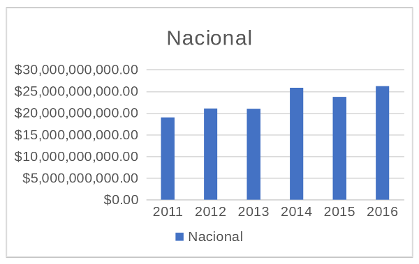
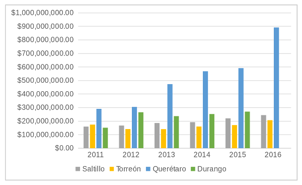

El impuesto predial es el ingreso más importante de los municipios a nivel nacional el cual, debido a la baja recaudación que se tiene, no representa una fuente de ingresos suficiente para que se puedan abordar los gastos de una administración a nivel local.
Esto conlleva a que sean dependientes de recursos que provienen de aportaciones o participaciones estatales y federales, así como la contratación de deuda para solventar los gastos. Esta interdependencia gubernamental fluye para ambos lados, lo cual significaría que una eficiencia en el cobro del impuesto predial beneficia tanto al municipio como a los otros niveles de gobierno al disponer de más recursos en total1.
Adicionalmente, el impuesto predial tiene la ventaja de que se aplica a un bien fijo y visible, lo que lo hace una base tributaría estable, y cuyo valor es más fácil de reconocer y estimar a diferencia de los impuestos sobre ingresos o pagos de derechos, entre otros.
A nivel nacional, la recaudación de impuestos es considerablemente baja a comparación de otros países de la OCDE (Organización para la Cooperación y el Desarrollo Económico), en dónde para el 2015, solo el 17.4% del PIB se recauda a diferencia del promedio de 34.3% de los 35 países miembros en ese año, teniendo a Dinamarca como el que más recauda con un 46.6% del PIB2.
En cuanto al impuesto predial, la tendencia es similar, ya que mientras en países como Estados Unidos o Francia recaudan 3.1% y 3.7% de su PIB respectivamente3, en México este solo representa el 0.15% para el 2016, y en Coahuila el 0.14%.

A nivel nacional, la recaudación por impuesto predial asciende en el 2016 a poco más de $26 mil millones de pesos con un crecimiento promedio desde el 2011 de 7.2% en contraste con la inflación acumulada de 22.24%. de enero 2011 a diciembre 2016.
Los municipios de Coahuila recaudaron en el 2016 el equivalente a casi 817 millones de pesos en este impuesto, de los cuales se tiene que, en el mismo año, en Torreón se recaudaron 206 millones, un 10% más de los 187 millones originalmente presupuestados al inicio de ese mismo año.
Esta recaudación representa en los últimos tres años alrededor del 6% del presupuesto contemplado en la Ley de Ingresos del Municipio, a diferencia de otros municipios como Saltillo o Querétaro, en donde esta proporción equivale en el 2018 a 11.25% y 19.07% respectivamente.

Si bien este impuesto está ligado directamente con la cantidad de predios y sus características en cuanto al valor catastral, es necesario considerar también su evolución a lo largo del tiempo, de lo cual, entre 2011 y 2016, el ingreso por este rubro ha crecido en promedio 4.51% en Torreón, mientras que en el mismo lapso lo ha hecho un 9.07% en Saltillo, un 9.89% en todo el estado de Coahuila y comparado con ciudades que han crecido en los últimos años, el crecimiento del ingreso por predial ha sido del 27% en los mismos años.
Desde otra perspectiva, si calculamos este ingreso por el total de la población, se tiene que en Torreón se recaudan aproximadamente $240.00 pesos de impuesto predial por habitante, mientras que la media nacional es de $220.00 para el 2016.
Con proyecciones de CONAPO, se estima que este 2018 en Torreón, la cifra ascienda a $230.00 por habitante o a $242.85 conforme a la población censada en el 2015. Respecto a otras ciudades como Saltillo, esta cifra asciende a $332.14 por habitante y en casos como Querétaro a $997.98 para el último ejercicio fiscal.
Si bien el predial es un impuesto a todos los predios registrados en el municipio, se estima conforme al Inventario Nacional de Viviendas que la recaudación por hogar en Torreón es de $860.00 pesos conforme al presupuesto del 2018, mientras que para ciudades como Saltillo es de $1,197.00 y en Querétaro llega casi a los $4 mil pesos.
La constante en este diferencial en cuanto a los ingresos por predial, es el esfuerzo que lleva a cabo por recaudar dicho impuesto, del cual se argumenta que las aportaciones y contribuciones de otros niveles de gobierno incentiva a no mejorar la recaudación local ya que implica mantener una actualización constante de los datos catastrales, así como el trabajo propio de recaudar el impuesto.
De igual forma, la misma federación, a través de los cálculos para transferir el presupuesto, busca incentivar que los gobiernos locales mejoren en este aspecto al considerar dentro de sus variables el esfuerzo recaudatorio que hagan, siendo una condicionante par el monto final que se aporta al municipio.
.
FUENTE: Sobarzo Fimbres, Horacio Enrique, Relaciones fiscales intergubernamentales en México: evolución reciente y perspectivas. Problemas del Desarrollo. Revista Latinoamericana de Economía en linea 2009, 40 (Enero-Marzo) : [Fecha de consulta: 1 de agosto de 2018] Disponible en esta liga ISSN 0301-7036 OECD (2014), "Tax Levels and Tax Structures, 1990-2012", in Revenue Statistics in Latin America 2014, OECD Publishing, Paris, https://doi.org/10.1787/rev_lat-2014-5-en-fr. OECD (2013), "Tax levels and tax structures, 1965-2012", in Revenue Statistics 2013, OECD Publishing, Paris, https://doi.org/10.1787/rev_stats-2013-5-en-fr.